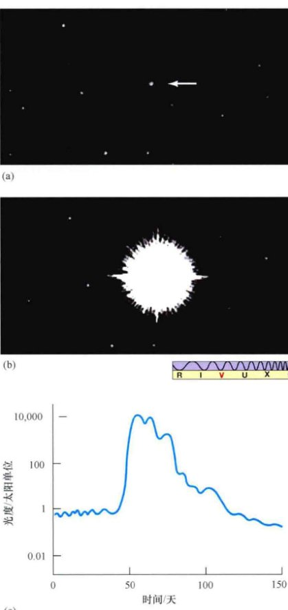
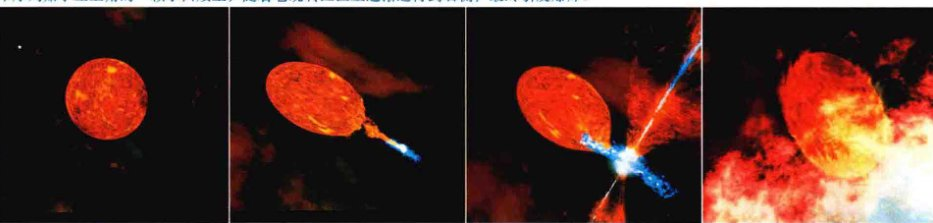
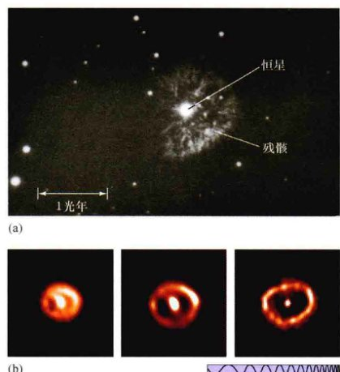
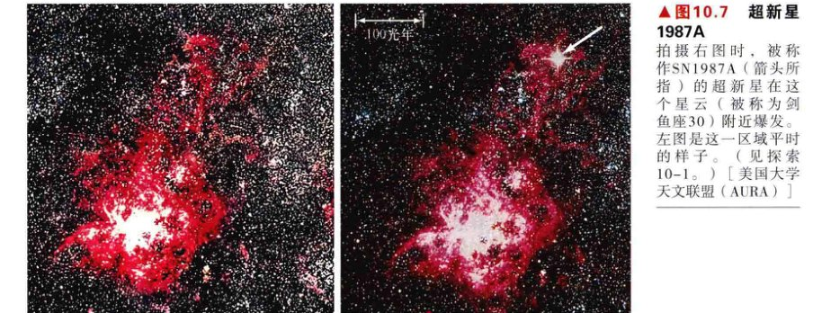
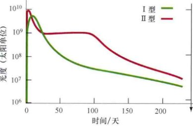
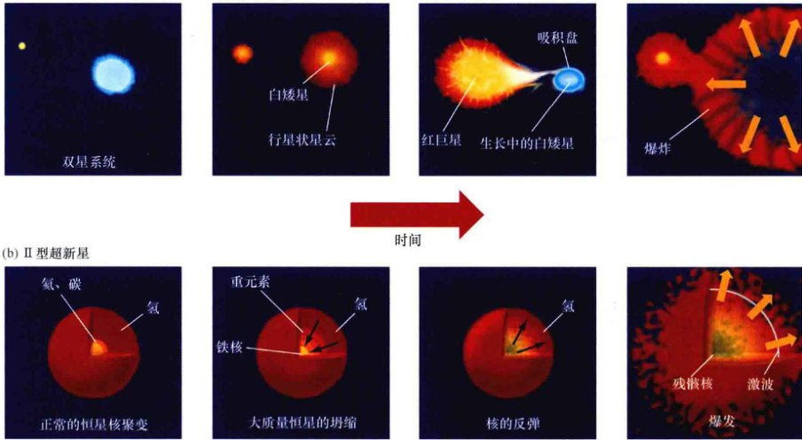
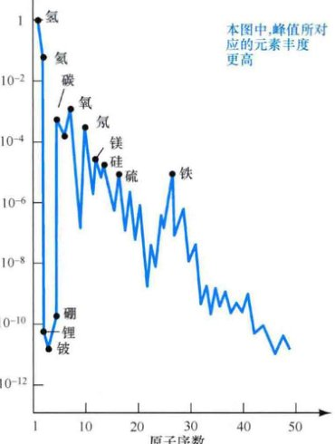
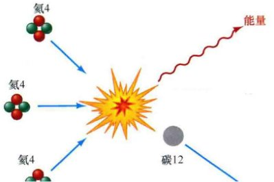

第21章 恒星爆发 新星、超新星，以及元素的合成
当一颗恒星耗尽燃料时，等待它的将是什么命运？对于一颗低质量恒星，白矮星并非是必然的归宿——如果它有一颗能提供额外燃料的双星伴星，那么它仍有继续发生剧烈活动的可能。对于大质量恒星而言，无论存在双星伴星与否，它们必然在一次爆发中走向死亡。这个过程将释放巨大的能量，产生多种元素，并将爆发的残骸抛洒在星际空间。
这些灾难性的爆发可能引发新恒星的形成，继续恒星生与死的循环。在本章，我们将更详细地探讨恒星爆发的过程，以及那些构成我们人类自身元素的产生机制。
21.1 白矮星的涅槃重生
虽然大部分恒星日复一日、年复一年稳定地放出光芒，但有些恒星的亮度会在非常短的时间内发生巨大变化。有一类恒星叫作新星 (nova，复数形式：novae)，它的亮度可能会在几天增加上万倍甚至更多，而后在几周或几个月的时间里再慢慢恢复到最初的光度。“nova”这个词在拉丁语中意味着“新”，对于早期观测者来说，这类恒星看起来确实是新的，因为它们在夜空中突然出现。现在，天文学家们意识到新星完全不是一颗新的恒星，正相反，它是一颗白矮星。这类恒星通常非常黯淡，其表面正在发生一场爆炸，导致恒星光度迅速、短暂地升高。
分别在 (a) 1934年3月和 (b) 1935年5月拍摄的武仙座新星的图片，1年间该新星的亮度增大了60,000倍。(c) 一颗典型新星的光变曲线会在迅速上升后再缓慢下降，这很吻合新星是白矮星表面核爆闪光的解释。[加利福尼亚大学 (UC) / 利克天文台 (Lick Observatory)]
图21.1 (a) 和图 21.1 (b) 说明了一颗典型新星亮度的升高。图21.1 (c) 显示了一颗新星的光变曲线，说明其光度如何在几天内急剧上升，然后在几个月的时间里逐渐降低至正常水平。平均每年能观测到两三颗新星。天文学家还知道许多复发新星——在几十年内若干次地被观测到这些恒星“成为新星”。
什么可能导致这些黯淡的、死亡的恒星发生如此爆发呢？这个过程产生的能量太高，无法用耀斑或者其他表面活动来解释。正如我们在前一章看到的，白矮星的内部没有核反应。(9.3节) 要理解到底发生了什么事情，我们必须再次考虑低质量恒星进入白矮星阶段后所面临的命运。
我们在第9章提到，白矮星阶段意味着一颗恒星演化的终点。接下来，恒星只是变冷，最后变成一颗黑矮星——星际空间的燃烧灰烬。对于一颗类似于我们太阳的孤立恒星，这一场景非常正确。但如果这颗恒星属于双星系统，就会有一种新的重要的可能性。如果双星系统中两颗恒星的距离足够近，那么矮星的潮汐引力场就能从主序星或者巨星伴星的表面吸引物质，这些物质主要是氢和氦。双星系统将成为物质交换的系统，这与我们在第20章讨论的情况类似。从伴星流出的气体流将经过内拉格朗日点 (L1)，然后落到矮星上。(9.6节)

如果半接双星系统中的白矮星与它的伴星（图中的情形是一颗主序星）足够近，它的引力场可以从伴星表面撕扯物质。对比图9.22，但注意，与早些时候图中展示的场景不同，物质不是直接落到白矮星表面。相反，它形成一个气体的吸积盘，螺旋式地落到矮星的表面。
由于双星系统的自转以及矮星较小的体积，伴星物质不会直接落到矮星上，如图9.21所示。相反，这些物质会“越过”这一致密星，围绕在其周围，并进入环绕矮星的轨道，形成一个漩涡。这一扁平状的物质盘被称作吸积盘，如图21.2所示。由于气体内部的黏性效应（即摩擦），在吸积盘中环绕的物质会逐渐向内漂移，随着它沿着螺旋轨道落到矮星表面，其温度也逐渐上升。吸积盘内部的温度非常高，会在可见光波段、紫外波段，甚至是电磁波谱的X射线部分产生较强辐射。在很多双星系统中，吸积盘的亮度超过白矮星本身，是新星爆发过程中的主要光辐射来源。在许多星系的新星中，通常都能观测到炙热吸积盘发出的X射线。在向内迁移的物质流与吸积盘撞击的地方，通常会形成动荡的“热点”，使双星系统发出的光辐射出可被探测到的波动。
在这幅艺术家的概念图中，一颗白矮星（实际上在左上角远处）绕着一颗冷却的红巨星运行 (a)。随着矮星在椭圆形轨道上运转，它逐渐接近巨星，红巨星的物质随之被吸积并积聚在白矮星表面 (b 和 c)。随后，矮星点火发生氢聚变，形成新星爆发 (d)。[D. 贝里 (D. Berry)]
当“偷来”的气体在白矮星表面堆积时，它的温度变得越来越高。最终，它的温度超过了 107K，导致氢元素被点燃，并以惊人的速度合成为氦。图21.3 (a) ~ (d) 说明了发生的时间顺序。这一表面燃烧过程虽然短暂却很剧烈：恒星的亮度突然上升，之后随着一些燃料的耗尽而黯淡下来，燃烧的残骸被吹散到星际空间中。如果这一现象恰好能从地球看到，我们就见到了一颗新星。如图21.4所示，两颗新星显然正在抛射其表面的物质。新星亮度的下降是因为白矮星表面层被吹散到星际空间，并膨胀变冷。通过将对光变曲线细节的研究与新星结合，天文学家能获得关于白矮星及其双星伴星的丰富信息。
(a) 从英仙座新星的这幅图片可以清晰地看到恒星表面的物质喷射。1901年，该新星突然增亮了40,000倍，该图片拍摄于50年之后。这大约对应于图21.3 (d)。(b) 天鹅座新星于1992年爆发，图片由哈勃望远镜上的一台欧洲照相机拍摄。左边是爆炸后1年多的图片，可以看到一个迅速膨胀的泡泡；右边是7个月之后，壳层继续膨胀和扭曲。由于拍摄对象远在10,000光年之外，因此这些图片比较模糊。[帕洛马天文台 (Palomar Observatory)、欧洲南方天文台 (ESA)]
新星代表着双星系统中的一颗恒星能将其“活跃的生命期”延伸到白矮星阶段。原则上，复发的新星即使不能重复剧烈的爆发过程数以百次，也能重复几十次。但在恒星演化的终点，还存在更加极端的可能性。在合适的环境中，可能还会酝酿出能量更加巨大的事件。
√ 太阳会变成一颗新星吗？
21.2 大质量恒星的终结
小于8倍太阳质量的小质量恒星，其温度还不够点燃它核心的碳。它以一颗碳氧白矮星（甚至是氖氧白矮星）终结一生。(9.3节) 然而，大质量恒星不仅能聚变氢和氦，还能聚变成碳和氧，甚至能随着它内核的继续收缩以及温度的持续上升，合成更重的元素。(9.4节) 随着核心的演化，它的燃烧速率加快。有什么能阻止这一失控的过程呢？在大质量恒星演化的终点是否有一个稳定的“类白矮星”状态呢？这类恒星的终极命运是什么？要回答这些问题，我们必须更加仔细地审视大质量恒星中的聚变过程。
重元素的合成
图21.5是一个高度演化的大质量恒星的内部剖面图。请注意诸多的分层，不同原子核在其中燃烧。温度随着深度而升高，每个燃烧阶段的灰烬成为下一阶段燃烧的燃料。核心区边缘的温度相对低，氢在那里合成为氦。在中间层、由氦、碳、氧构成的壳层燃烧形成更重的原子核。核心区的更深处是氖、镁、硅以及其他重原子核。它们都由核心区分层中的核聚变而来。（请记住，对于天文学家来说，任何比氦重的元素都是“重”元素。）核心本身由铁组成。在本章，我们将更详细地探讨这一燃烧链过程中的关键反应。

一颗高度演化的大质量恒星的内部剖面图，其质量超过太阳质量的8倍。它的内部与洋葱的分层结构相似，半径越小温度越高，壳层中的元素也越重。核心区实际上只比地球大几倍，而恒星本身则是太阳大小的数百倍。
由于中心区域每种元素都燃烧殆尽，所以核心区会收缩、升温，并利用前一燃烧阶段的灰烬开始核合成。这将形成一个新的内核，并再次收缩、再次加热，等等。经过每一个稳定和不稳定的阶段，恒星中心的温度上升，核反应加速，新释放的能量将支持恒星更短的一段时间。例如，以整数计，质量达太阳质量20倍的恒星，其中的氢元素可以燃烧1000万年，氦元素能燃烧100万年，碳元素能燃烧1000年，氧元素能燃烧1年，硅元素能燃烧1星期；它的铁核只能生长不到一天。
铁核的坍缩
一旦内核开始变成铁，我们的大质量恒星就有麻烦了。如图21.6所示，铁是其中最稳定的元素。要理解这幅图，想象由4个质子合成氦4。按照图片所示，每一个氦4原子核的粒子质量小于一个质子的重量，因此这个合成过程中会有质量丢失，（按照质能守恒法则）还会有能量释放。(5.6节) 类似地，3个氦4核合成为碳，会产生质量净损失，并再次释放能量。换句话说，图片左侧展示了氢元素如何通过核合成释放能量；图片右侧展示了相反的过程，被称作裂变。在这里，原子核的结合将增加每个粒子的总质量，因此会吸收能量，聚变因而不能发生。然而，分裂一个重原子核（如位于图片右边缘的铀或钚）成为更轻的原子核会释放能量——这正是核反应堆和原子弹的工作原理。

这幅图展示了大部分已知核的质量（每核粒子——质子或中子）如何随着核质量而改变。当轻核合成（图片左侧）时，每粒子的质量减轻，释放出能量。(5.6节) 类似地，当重核分裂时（右侧），总质量再次减少，并再次释放出能量。
铁位于这两类反应的分界线上——图片中曲线的最低点。铁核非常致密，因此不能通过将它们聚合为更重的元素来提取能量，亦不能将它们分裂为较轻的元素。实际上，铁扮演着灭火器的角色，减弱恒星核心的燃烧。当出现相当数量的铁时，恒星中心的燃烧将最终停止，恒星内部的支撑力将减弱，恒星存在的基础遭到破坏，它的平衡一去不复返。尽管铁核在这一阶段的温度达到几十亿开尔文，但物质产生的向内的巨大引力注定了灾难在不久后便会到来。引力超过了热气体的压力，恒星随之引爆，向内部坍缩。
核心温度上升到近100亿开尔文。根据维恩定律，单个光子在这一温度上具有极高的能量——足够将铁分裂为较轻的核，然后再继续将这些轻核分裂，直到只有质子和中子。(3.2节) 这一过程被称作核心区中元素的光致蜕变。在不到1s的时间里，核心区的坍缩将使过去1000万年内的核聚变的成果一笔勾销！但分裂铁核以及将轻核分裂为更小的核需要大量能量（如图21.6所示，从铁向左移动）。毕竟，分裂过程是聚变反应的反过程，后者产生了早期恒星的能量。光致蜕变会吸收热能——换句话说，它冷却了核心区，因而降低那儿的压力。随着原子核被摧毁，恒星核心区更加无法抵御自身的引力，坍缩因而加速。
现在，核心区完全由简单的初级粒子——电子、质子、中子和光子构成。它们的密度非常高，并仍然在收缩。随着核心区密度继续上升，质子和电子被挤压在一起，形成中子和中微子：
这一过程有时被称作核心区的中子化。在第5章的讨论中提到，中微子是一种极其难以捕捉的粒子，它几乎不与任何物质相互作用。(5.6节) 尽管此时中心区的密度可能超过 1012kg/m3，但中子化过程产生的大部分中微子也会穿过核心区，似乎核心区根本不存在。它们逃逸到太空中，带走能量，进一步减少核心区的压力支持。
超新星爆发
电子的消失和中微子的逃逸使核心区的稳定性更加糟糕。现在没有任何东西能阻挡它的坍缩，直到中子互相接触，达到 1015kg/m3 的惊人密度。此时，收缩的核心区中的中子产生的阻力迅速升高，阻止核心区进一步压缩，并产生巨大的压力，最终减缓核心区的引力坍缩。然而，当坍缩实际中止时，核心区已经超过了它的平衡点，密度可能高达 1017 或 1018kg/m3，然后再重新开始膨胀。就好像一个快速运动的球撞到墙壁并反弹，核心区被压缩、停止，然后再次膨胀——报复性地膨胀！
刚刚描述的事件不会花很长时间，从坍缩开始到核密度“反弹”只有大概1s。在这一时刻，核心区再次膨胀。一股巨大的能量冲击波将高速横扫恒星，把上面所有的分层炸裂到太空中，包括中心铁核外刚形成的所有重元素。虽然计算机模型仍有些不确定性，冲击波到达恒星表面并摧毁恒星的细节也不明了，但最终的结果却是一定的：恒星爆炸，成为宇宙已知事件中最具能量的事件之一（见图21.7）。在几天的时间内，爆发的恒星的亮度可以与它所在的星系相匹敌。大质量恒星的这种壮烈的死前撼响被称作“核坍缩超新星”。
拍摄右图时，被称作SN1987A（箭头所指）的超新星在这个星云（被称为剑鱼座30）附近爆发。左图是这一区域平时的样子。（见探索10-1。）[美国大学天文联盟 (AURA)]
√ 为什么大质量恒星的铁核会坍缩？
21.3 超新星
我们来比较一下超新星和新星。与新星类似，超新星是恒星亮度突然急剧上升，然后缓慢下降，最终从视线中消失的现象。在尚未爆发时，将成为超新星的恒星被称作超新星的前身星。在一些情况下，超新星的光变曲线看起来会与新星的光变曲线非常类似，一颗遥远的超新星会看起来很像一颗近距离的新星——实际上，它们是如此相像，直到20世纪20年代，人们仍然没有充分重视这两者的区别，但现在知道了新星和超新星是两种截然不同的现象。超新星的能量更加巨大，由完全不同的物理过程所驱动。
新星和超新星
在理解新星或超新星的成因之前，天文学家已非常明确它们之间的观测差异。其中最重要的一点是超新星比新星要亮上百万倍。超新星产生巨大的光辐射，其亮度是太阳亮度的数十亿倍，恒星爆发几小时内便达到这一亮度水平。在突然变亮和逐渐暗淡的几个月里，超新星产生的电磁能量辐射总量约 1043J ——这几乎是太阳在它100亿年的整个生命过程中辐射的总能量！（然而，虽然这一能量非常巨大，但与中微子形成过程中释放的能量相比，仍相形见绌，后者的能量是前者的100倍。）
第二个重要的区别是，同一颗恒星可以多次成为新星，但只有一次机会成为超新星。在天文学家掌握新星与超新星的确切性质后，这其中的原因也就变得清楚了。现在我们了解了这些爆炸为何以及如何发生，这一区别也就容易理解了。前面描述的新星吸积—爆炸循环可以多次发生，但超新星会摧毁相关恒星，因此没有重复发生的可能。
典型的I型和II型超新星的光变曲线都表明，它们的最大光度有时可以达到太阳光度的10亿倍，但它们在最初峰值之后的光度下降过程中，展示出了不同的特征：I型超新星的光变曲线与新星相似（见图21.1），但释放的总能量要大得多；II型超新星的光变曲线在下降阶段有典型的平台。
除了新星和超新星的区别外，超新星之间也有重要的观测差异。根据光谱，有些超新星含氢量非常少，而其他超新星会含有大量的氢。而且，贫氢超新星的光变曲线从本质上不同于那些富氢超新星的光变曲线。在这些观测基础上，天文学家把超新星分为两类，简称为I型和II型。I型超新星是贫氢类，它们的光变曲线形状类似于典型的新星；II型超新星的光谱显示它含有大量的氢，在光度极大的后几个月时，其光变曲线通常会有一个典型的“平台”（见图21.8）。已观测到的超新星大致可均等地被划分为这两类。
碳爆发超新星
是什么产生了超新星之间的这些差异呢？超新星爆发的方式是否不止一种？答案是肯定的。要理解其他的超新星机制，我们必须回到新星的成因，并考虑其吸积—爆发循环的长期后果。
新星从白矮星表面喷射物质，但它们不一定喷射或燃烧自上次爆发以来累积的所有物质。也就是说，在新星的每次新循环中，矮星的质量有可能在缓慢地增加。随着质量的增加，需要维持这一质量的内部压力也会增加，白矮星有可能进入一个新的不稳定期，并产生灾难性的后果。
回想一下，白矮星不是由热压力（热）所支撑的，而是由电子简并压。电子被挤压得非常紧密，它们之间有效地互相接触。(9.3节) 然而，电子能施加的压力是有极限的。因此，白矮星的质量也有极限。超过这一极限，电子将无法提供支撑恒星的压力。详细的计算显示，白矮星的最大质量是太阳质量的1.4倍。这一极限也被称作钱德拉塞卡质量，以纪念印度裔美国天文学家苏布拉马尼扬·钱德拉塞卡。他从事理论天体物理研究，并在1983年获得了诺贝尔物理学奖。
如果通过吸积，白矮星的质量超过了钱德拉塞卡质量，那么它内部的简并电子压就将无法抵抗引力，恒星便会立即开始坍缩。它内部的温度迅速上升，并达到碳能够合成更重元素的温度。碳聚变几乎同时在白矮星的所有地方开始，整个恒星以超新星的另外一种形式爆发——碳爆发超新星，其爆发强度与大质量恒星死亡时所产生的“内爆”超新星相当，但成因却完全不同。在另一个（许多天文学家认为）可能更常见的场景中，双星系统中的两颗白矮星可能碰撞并合并形成一个巨大的、不稳定的恒星。最终的结果是相同的：一颗碳爆发超新星。
我们现在可以理解I型和II型超新星的区别了。I型超新星是碳白矮星的爆燃产生的爆炸物，而碳白矮星是小质量恒星的产物。由于这场大火源自一个几乎没有氢的系统，所以我们可以很容易地发现为什么I型超新星的光谱中几乎没有这种元素的痕迹。（我们即将看到的）光变曲线的形状，几乎完全是由爆炸中形成的不稳定重元素的放射性衰变形成的。
如前所述，大质量恒星核心区的内爆——爆炸将产生II型超新星。冲击波从内向外横扫恒星，并将恒星的外部包层吹向太空。详细的计算机模型表明，II型光变曲线的形状特征与由此产生的恒星外部包层膨胀的冷却相符。碰撞的物质主要是尚未燃烧的气体——氢和氦。因此，这类超新星的光谱由这些元素主导也不足为奇。（见探索10-1，一颗被深入研究的II型超新星证实了许多基本的理论预测，同时也迫使天文学家修改他们的模型细节）。
I型和II型超新星有不同的成因。这些序列描述了每种类型的超新星的演化历史。(a) 一颗富含碳的白矮星从邻近的红巨星或主序星伴星吸引物质时，经常会形成I型超新星。(b) 大质量恒星的核心区坍缩，然后在灾难性爆发中再次膨胀时，会产生II型超新星。
图21.9总结了两种类型的超新星的爆发过程。我们强调，尽管涉及的总能量相似，但I型和II型超新星彼此并未关联，它们发生于完全不同类型的恒星上和完全不同的环境中。所有的大质量恒星都会成为II型（核坍缩）超新星，但演化成为白矮星的小质量恒星中只有一小部分最终会爆发为I型（碳爆发）超新星。然而，小质量恒星的数量远远超过大质量恒星的数量。因此，由于惊人的巧合，两种超新星产生的速率大致相同。
超新星遗迹
我们有足够的证据证实超新星曾发生在银河系内。偶尔，从地球上能看见这些爆发本身。在许多其他情况下，我们可以探测到它们发光的残骸，或称超新星遗迹。蟹状星云是被研究得最好的超新星遗迹之一，如图21.10所示。蟹状星云现在已经大大变暗了，但最初在公元1054年爆发时，它是如此耀眼，一些古代中国和中东的天文学家的记录宣传其亮度大大超过金星。按照一些可能有所夸大的记录，它的亮度甚至可以与月亮相当。在近一个月的时间里，这颗爆发的恒星据说在白昼也可以见到。印第安人在目前发现的美国西南部的岩石上也刻录下了这一事件。

这颗古代II型超新星的残骸叫作蟹状星云（或是梅西耶星表中的M1）。它距离地球约6500光年，角直径约为满月的五分之一。主图像由位于智利的甚大望远镜所拍摄，插入图由哈勃空间望远镜所拍摄。[欧洲南方天文台 (ESO)、美国国家航空航天局 (NASA)]
蟹状星云当然有爆炸残骸出现。即使在今天，其中的结块和细丝仍是过去剧烈爆发的有力佐证。实际上，天文学家有证据表明，这些物质是由某次中心爆发所抛射的。谱线的多普勒红移表明，蟹状星云，也即爆发形成这颗II型超新星的大质量恒星的外部包层，正以每秒几百千米的速度向太空膨胀。图21.11生动地表明了这一现象，它由1960年拍摄的蟹状星云正片与1974年拍摄的负片叠加而来。如果气体没有运动，正片与负片就会完全重合，但实际上它们没有——在间隔的14年里，气体向外运动了。按时间追溯这一运动，天文学家发现爆发发生在约9个世纪以前，这与中国的观测相符。

相隔14年拍摄的蟹状星云的正片和负片不能完全重叠，说明气体细丝仍在远离爆发地点。首先拍摄的是白色的正片，而后覆盖的是黑色的（负片）细丝，因而外围的黑色（但仍在）残骸离爆发的中心更远。图片的比例尺与图21.10大致相同。[哈佛大学天文台 (Harvard College Observatory)]
夜晚的天空中有许多很久之前恒星爆发的遗迹。图21.12是另一个例子。它显示了船帆座超新星遗迹，其扩张速度暗示了其中央恒星约在公元前9000年时爆炸了。该遗迹距离地球仅1600光年。考虑到如此近的距离，船帆座超新星当时可能在几个月的时间内都和月亮一般明亮。我们只能推测，当这样一颗明亮的超新星在天空中第一次出现时，会对神话、宗教以及石器时代的人类文化产生什么样的影响。

船帆座超新星遗迹的发光气体分布在天空中6°的区域内。插入图更清楚地显示了星云普遍存在的细丝结构的一些细节。（长斜线是拍摄照片时，地球轨道卫星划过所形成。）[D. 马林 (D. Malin) / 英澳望远镜 (AAT)]
尽管在20世纪，已观测到了几百颗超新星，但没有天文学家利用现代设备观测到我们所在星系的超新星。近四个世纪前，伽利略第一次把望远镜对准天空。但直至今天，银河系中也没有任何可观测的恒星爆发。1572年第谷以及1604年开普勒（和其他人）最后一次在我们的银河系内观测到超新星，这在文艺复兴时期引发了世界性的轰动。那些非常亮的天体突然出现、随后暗淡的现象有助于打破亚里士多德关于宇宙是一成不变的观念。
在恒星演化理论的基础上，天文学家计算出银河系约每100年便会出现一颗可以观测到的超新星。即使是在几千秒差距的距离上，超新星的亮度也会（暂时地）超过天空中最亮的行星——金星，因此，天文学家似乎不太可能在过去的近四个世纪内错过任何一颗超新星。鉴于我们在银河系所在的位置，似乎早该观测到一颗超新星。然而，一颗真正毗邻的超新星，比如在几百秒差距之内的，会非常罕见，大约100,000年才有一颗。人类可能注定要从远处观测所有的超新星了。
√ 天文学家如何在理解超新星机制之前就知道，超新星诞生的过程有至少两种不同的物理过程？
21.4 元素的形成
到现在为止，我们主要研究了核反应在恒星能量产生中所起的作用。现在，让我们再次考虑它们，但这次是作为创造我们所生活的世界的相关过程。结合核物理与天文学，元素的演化是现代天文学中一个既复杂又非常重要的问题。
物质的类型
目前我们已知115种不同的元素，包括从最简单的、仅包含一个质子的氢，到最复杂的、2004年才首次报道的、目前被称作 Uup (ununpentium) 的元素。它的原子核中有115个质子和115个中子（见附录2）。1999年，研究人员宣布发现116号和118号元素，但实验结果没有被重复，所以这些元素没有获得“正式的”认可。所有元素都存在于不同的同位素中，每种同位素都拥有相同数量的质子，但中子数不同。我们经常认为，最常见或稳定的同位素是一个元素的“正常”形态。有一些元素，以及许多同位素的放射性是不稳定的，这意味着它们最终会衰变为其他更稳定的原子核。
在地球上发现的81种稳定元素构成了宇宙中的绝大部分物质。此外，10种放射性元素，包括氡和铀也天然地出现在了我们的星球上。尽管这些元素的半衰期（一半的原子核衰变为其他元素所需要的时间）非常长（通常是数百万甚至数十亿年）。自太阳系形成45亿年来，它们缓慢但稳定地衰变着，意味着它们在地球上、陨石中以及月球样本中都非常稀缺。在恒星中也没有观测到它们，因为它们数量太少而无法产生可探测到的谱线。
除了这10种天然的放射性元素，在地球上的核实验室内，19种其他的放射性元素也被人为地在特殊条件下合成。核武器试验后收集的碎片中也包含一些这类元素的痕迹。与天然放射性元素不同，人工放射性元素很快（在远不到100万年内）就衰变成了其他元素。因此，它们在自然界中也极其罕见。还有两种其他元素完整了我们的列表：锝是一种稳定的元素，但它只作为核试验的副产品出现在地球上；钷是存在于恒星中的一种不稳定元素，但它不存在于地球上，任何在地球形成时存在的钷早已经衰变完了。
物质丰度
所有这些元素是如何以及在哪里形成的呢？它们是一直在宇宙中存在？还是在宇宙形成后才被创造出来的？自20世纪50年代以来，天文学家意识到宇宙中的氢和大部分氦是原初的，也就是说，这些元素可以追溯到宇宙的最早时期。我们宇宙中的其他元素是恒星核合成的产物，也就是说，它们形成于恒星中心的核聚变。
本图总结了宇宙中元素及其同位素的丰度，用相对于氢的丰度来表示。横轴表示所列出元素的原子序数——原子核中的质子数量。请注意，许多常见的地球元素位于图中的“峰值”处，周围是丰度不及其 1/106 的元素。还要注意铁元素附近出现的大峰值。峰值存在的原因将在文中讨论。
为了检测这个想法，我们必须考虑的不仅仅是不同类型的元素和同位素，还有它们的观测丰度，如图21.13所示。图中所示的曲线主要来自于对包括太阳在内的恒星光谱的研究。该图的核心内容被总结在表21.1中。根据所包含核粒子（质子和中子）的总数，表21.1将所有已知的元素分成八组。（所有元素的所有同位素都包含在表和图中，虽然图中只标记出了几种元素。）任何关于元素形成的理论必须重现这些观测到的丰度。最明显的特征是，重元素的丰度通常远低于较轻元素的丰度。然而，图中许多明显的波峰和波谷也代表着重要的约束。
表21.1 元素的宇宙丰度
| 粒子的元素族 | 原子数目的丰度百分比① |
|---|---|
| 氢 (1个核粒子) | 90 |
| 氦 (4个核粒子) | 9 |
| 锂族元素 (7~11个核粒子) | 0.000 001 |
| 碳族元素 (12~20个核粒子) | 0.2 |
| 硅族元素 (23~48个核粒子) | 0.01 |
| 铁族元素 (50~62个核粒子) | 0.01 |
| 中等重量元素 (63~100个核粒子) | 0.000 000 01 |
| 重元素 (超过100个核粒子) | 0.000 000 001 |
① 因为氦元素丰度的不确定性，所以总比例不等于100%。包含所有元素的所有同位素。
氢和氦的燃烧
我们先回顾一下在恒星演化的不同阶段中，导致重元素产生的反应。讨论所涉及的反应时，需参考图21.6。恒星核合成始于第5章探讨的质子-质子链。(5.6节) 如果温度足够高，即温度至少为1000万开尔文时，将发生一系列的核反应，最终四个质子 (1H) 会形成一个普通的氦原子核 (4He)：
回想一下，正电子会立即与附近的自由电子发生作用，通过物质与反物质湮灭产生高能的伽马射线。中微子迅速携带着能量逃逸，但它在核合成中没有直接的作用。这些反应的存在已经直接被近几十年来世界各地的实验室所进行的核试验证实了。在大质量恒星中，还有被称作碳氮氧循环的一系列反应。这涉及碳、氮、氧等原子核，可能大大加快氢燃烧的过程，但图21.14所示的四个质子合成一个氦核的基本反应是不变的。

在基本的质子-质子过程中，氢燃烧反应是将四个质子结合形成氦4核，并在这一过程中释放出能量。（参见图5.27）。
随着恒星在核心中聚集氦，燃烧停止，核心区开始收缩和升温。当温度超过约1亿开时，氦原子核可以克服相互的电斥力，引发三阿尔法反应。我们在第9章 (9.2节) 里讨论过这一反应：
这个反应的最终结果是，三个氦4原子核结合成一个碳12核（见图21.15），并在这一过程中释放出能量。
发生在主序后恒星中的基本三阿尔法过程，氦燃烧反应将三个氦4核结合形成碳12。
碳燃烧和氦俘获
在越来越高的温度下，越来越重的原子核可以获得足够的能量来克服它们之间的电斥力。大约在6亿开尔文（仅在比太阳质量更大的恒星核心区可以达到）的温度下，碳原子核可以聚变为镁，如图21.16 (a) 所示：
然而，由于核电荷的急剧攀升，即原子核中质子数目越来越多，任何比碳更重的原子核之间核聚变所需要的温度，实际上在恒星中都很难实现。大部分重元素以更容易的形式合成。例如，两个碳原子核之间的斥力比碳原子核与氦原子核之间的斥力大三倍。因此，碳-氦聚变发生的温度比碳-碳聚变发生的温度更低。正如我们在9.3节中看到的，温度高于2亿开尔文时，碳12核与氦4核的核碰撞可以产生氧16：
如果存在任何氦4核，图21.16 (b) 所示的反应就比碳-碳聚变会更容易发生些。
同样，这样产生的氧16可能与其他氧16核在10亿开尔文的温度下聚变形成硫32：
然而，更有可能的是，氧16核俘获一个氦4核（如果存在的话），然后形成氖20：
由于发生的温度低于氧聚变所必需的温度，因此第二个反应更有可能发生。
这样一来，随着恒星的演化，更重的元素更易于通过氦俘获的方式形成，而不是与其他同种的原子核发生聚变。这样的结果是，原子核质量为4个单位（如氦本身）、12个单位（碳）、16个单位（氧）、20个单位（氖）、24个单位（镁）和28个单位（硅）的元素，在图21.13的宇宙元素丰度图中均有明显的峰值。每一种元素都是在恒星演化中由之前的元素与氦4核结合而成。

通过与其他碳核 (a) 或更普遍地与氦原子核 (b) 发生聚变，碳能形成更重的元素。
在演化后期的恒星中，氦俘获绝不是核反应中唯一的类型。随着不同类型的原子核的积累，各种各样的反应都成为可能。在有些反应中，质子和中子从它们的母原子核中逃脱，并被其他的原子核吸收，形成新的原子核，其质量在由氦俘获形成的不同原子核的质量之间。实验室的研究确认，诸如氟19、钠23、磷31以及许多其他的普通原子核都是通过这种方式产生的。但是它们的丰度不及那些由氦俘获直接产生的元素，其中的原因仅仅是氦俘获反应在恒星中更为普遍。由于这个原因，许多这类元素[其质量不是4（即一个氦原子核的质量）的倍数]出现在图21.13的波谷中。
铁的形成
硅28在恒星核心区出现前后，是继续进行氦俘获形成更重的原子核，还是更复杂的原子核倾向于分裂为简单的原子核，二者之间产生了激烈的竞争。发生这种原子核分裂的原因是热。现在，恒星核心区的温度已经达到30亿开尔文这一无法想象的高温，如图21.17 (a) 所示，伽马射线与这一温度的共同作用具有足够的能量来分裂原子核。这与光致蜕变是相同的过程，最终将加速恒星铁核的坍缩，形成一颗II型超新星。
在这样的高温下，一些硅28原子核分裂为七个氦4核。附近尚未光致蜕变的原子核可能捕获一些或所有这些氦4核，导致形成更重的元素[见图21.17 (b)]。光致蜕变的过程提供了原料，允许俘获氦4成为质量更大的原子核。光致蜕变仍在继续，一些重原子核被摧毁，其他的质量则在增加。接下来，恒星形成硫32、氩36、钙40、钛44、铬48、铁52、镍56。从硅28到镍56的反应链是：
这两种步骤——光致蜕变以及紧随其后的俘获所产生的部分或全部氦4核（即阿尔法粒子）的过程——通常被称为阿尔法过程。
镍56不稳定，首先会迅速地衰变成钴56，然后衰变成稳定的铁56。任何不稳定的原子核都将继续衰变，直至达到稳定，而铁56是最稳定的原子核（见图21.6）。因此，阿尔法过程不可避免地导致了恒星核心区铁的聚集。

(a) 在高温下，重原子核（例如图中所示的硅）可以由高能光子分解成氦原子核。(b) 其他原子核可以俘获氦原子核，即阿尔法粒子，通过所谓的阿尔法过程形成更重的元素。这一过程会一直持续到形成镍56（铁族元素）。
描述图21.6的另一种方法是，在铁原子核中，26个质子和30个中子结合的紧密程度高于其他任何原子核中的粒子。铁被认为具有最大的核结合能，要分裂（解放）铁56的原子核需要比分裂其他元素的原子核更大的单个粒子能量。铁原子核这种更强的稳定性解释了为什么铁族元素中一些较重的原子核比许多较轻的原子核的丰度更高（见表21.1和图21.13）：随着恒星的演化，恒星倾向于在铁附近“积累”元素。
制造比铁更重的元素
如果阿尔法过程在元素铁的位置停止，那么铜、锌、金等更重的元素怎样形成？要形成这些元素，必须涉及氦俘获之外的一些核反应过程，这就是中子俘获——通过吸收中子来形成更重的原子核。
在高度演化的恒星的内部深处，发生中子俘获的条件已经成熟。中子作为许多核反应的“副产品”而产生，因此有很多中子可以与铁和其他原子核进行反应。中子不带电，所以在与带正电的原子核结合时，不需要克服斥力壁垒。随着越来越多的中子加入原子核，原子核的质量也持续增长。
将中子加入原子核，如铁，并不会改变它所属的元素，只会产生同一元素的一种更重的同位素。然而，由于加入原子核的中子很多，它最终变得不再稳定，放射性地衰变为另一种元素的稳定原子核。中子俘获过程随之继续。例如，一个铁56原子核能俘获一个中子，形成相对稳定的一种同位素铁57：
之后可能会发生另一次中子俘获：
这样便产生了另一种相对稳定的同位素铁58。这种同位素仍能俘获一个中子，形成更重的一种铁同位素：
实验室实验证明，铁59是放射性不稳定的。它在大约一个月内衰变为钴59，后者是稳定的；中子俘获过程随后重启：钴59俘获一个中子形成不稳定的钴60，而钴60反过来衰变为镍60，等等。
原子核每次连续俘获一个中子通常需要约一年的时间，所以在下一次中子俘获到来之前，大部分不稳定的原子核有充足的时间进行衰变。研究人员通常用s过程指代这种“慢”中子俘获机制。这是组成我们口袋中硬币的铜和银的来源，还有汽车电池中的铅、我们手指上戒指中的金（和锆）。正如前面提到的，一些元素的质量介于通过氦俘获形成的不同元素的质量之间，类似的慢中子俘获过程与这些质量较低的原子核有关。这些反应被认为在低质量恒星演化的晚期（渐近巨星支）极其重要。(9.3节)
制造最重的元素
s过程（慢过程，slow）解释了包括铋209在内的稳定原子核的合成。铋209是已知最重的非放射性原子核。但这一过程不能解释如钍232、铀238或钚242等最重的原子核是如何形成的。任何试图通过氦俘获形成比铋209重的元素的尝试都失败了，因为新的原子核衰变为铋的速度与它们形成的速度一样快。因此，必然还有另一个核机制可以产生最重的原子核。这个过程被称为r过程（r代表“快速”，与“慢”过程中的s对应）。r过程发生得非常快，（我们认为）它确实发生在标志着大质量恒星死亡的超新星爆发中。
在超新星爆发的最初15 min里，重原子核被爆炸的威力分裂，使自由中子的数量急剧增加。与s过程在稳定原子核耗尽时停止不同，在超新星爆发过程中，中子的俘获率如此之大，即使不稳定的原子核也可以在衰变之前俘获许多中子。通过将中子加入轻量和中量级的原子核中，r过程导致了已知的最重元素的诞生。因而，重元素中的最重者实际上诞生于其母恒星死亡后。但由于可用于合成这些最终原子核的时间非常短暂，所以这些元素从未在宇宙中变得非常丰富。比铁更重的元素（见表21.1）的丰度比氢和氦要低十亿倍。
恒星核合成的观测证据
现代观点认为，元素的形成涉及许多不同类型的核反应，它们发生在从主序星到超新星的恒星演化的不同阶段。元素周期表中从氢到铁的这些元素，首先是由核聚变产生，然后由阿尔法俘获过程俘获质子和中子来填补空白。比铁更重的元素通过中子俘获和放射性衰变产生。当形成它们的恒星走到生命的终点时，这些元素最终会被驱散到星际空间。
科学理论必须不断接受实验和观测的测试和验证，恒星核合成理论也不例外。(1.2节) 然而，刚刚描述的核过程几乎都发生在恒星深处，使我们无法观测。而与我们今天看到的与重元素相关的恒星也早已消失。那么，我们如何能确保这里提及的一系列事件确实发生了（而且今天仍在发生）呢？答案是，恒星核合成理论对恒星中元素的数量和种类做了许多详细预测，为天文学家提供了充足的机会来观察和测试它的结果。三个特别令人信服的证据使我们确认了该理论的基本可靠性。
首先，天文学家从实验室的实验中已经获知了各种原子核被俘获的速度和它们衰变的速度。把这些速度输入恒星与超新星核反应过程的具体计算机模型，得到的元素丰度与图21.13和表21.1中观测数据的每个点都吻合得非常好。直到元素铁，这种吻合都非常好。对于更重的原子核，数据也相当接近。尽管推理是间接的，但理论与观测之间的吻合却如此引人注目，大部分天文学家认为，这是支持整个恒星演化和核合成理论的强有力证据。
第二，一个特殊的原子核锝99的存在，直接证明了重元素确实在恒星的核心区形成了。实验室测量表明，锝原子核的放射性半衰期约为200,000年。从天文学角度来看，这是个很短的时间。从来没有人在地球上发现锝天然存在的任何痕迹，因为它早已经衰变了。在许多红巨星光谱中观测到锝的谱线，意味着它一定是在过去几十万年里通过氦俘获在核心区中被合成的，这是它形成的唯一的已知方式。然后它通过对流被输送到恒星表面，否则，我们不会观测到它。许多天文学家认为，锝的光谱证据证明了s过程确实在演化后期的恒星中上演过。
第三，对典型I型超新星的光变曲线的研究表明，放射性原子核的形成是爆发的产物。图21.18 (a)（参见图21.8）显示了爆发瞬间光度的急剧上升以及亮度缓慢降低的特征。由于爆发恒星的不同的初始质量，光度会在几个月至几年内下降到它原来的光度值，但所有爆发恒星的光度衰减曲线的形状都几乎相同。这些曲线有两个明显特征：最初的峰值之后，光度迅速下降；然后下降速度变缓。无论爆发的强度如何，光度衰减速度的突然变化都发生在爆发后约2个月后。

(a) I型超新星的光变曲线，不仅显示出光度的急剧上升和缓慢下降，还有爆发两个月后（红色箭头）光度衰减速度的标志性变化。这颗特殊的超新星于1938年出现在遥远的星系IC 4182中。(b) 对镍56、钴56通过放射性衰变发出的光的理论计算所得到的光变曲线，与在超新星实际爆发过程中观测到的曲线相似，这为恒星核合成理论提供了有力的支持。(c) 这幅主要是X射线波段的图像由钱德拉望远镜在2013年拍摄。它展示了一次被称作开普勒超新星的剧烈爆发后的余晖。最初，地球上的人们在1604年观测到了这一爆发，并以这位著名的德国天文学家来命名。这位天文学家在望远镜发明之前就对其有所研究。[美国国家航空航天局 (NASA) / 钱德拉X射线望远镜 (CXC)]
图21.18 (a) 中的光变曲线的分阶段下降可以用不稳定原子核的放射性衰变来解释，特别是在超新星早期大量产生的镍56及其衰变产物钴56。通过爆发的理论模型，我们可以计算出这些元素预期的形成数量。从实验室的实验中，我们还能知道它们的半衰期。由于每次放射性衰变会产生已知数量的能量，所以我们可以确定这些不稳定元素发出的光应当随着时间有所变化。计算结果与图21.18 (b) 中观测到的光变曲线能很好地吻合——I型超新星的光度与约0.6太阳质量的镍56衰变时所释放出的能量完全相符。20世纪70年代，天文学家首次获得了存在这些不稳定原子核的更直接的证据，当时在一颗遥远星系的超新星中认证了钴56衰变的伽马射线谱特征。
√ 为什么质量是4的倍数的元素，如元素碳、氧、氖、镁，以及元素铁在地球上如此普遍呢？
21.5 恒星演化的循环
恒星核合成理论能自然地解释，为什么古老的球状星团与现在银河系内形成的恒星之间的重元素丰度有所不同。(9.5节) 尽管一颗演化后期的恒星会在内部持续制造新的重元素，但恒星成分的变化仍主要限制在核心区内，而恒星光谱几乎显示不出其核心区的事件。对流能把核反应的一些产物（如在许多红巨星中观测到的锝）从核心区带到外部包层，但外层却在很大程度上保留了恒星的原始构成。只有在它生命的终点，新产生的元素才会被释放并散播到太空中。
因此，最年轻的恒星光谱显示出最多的重元素，因为每一代恒星都会增加星际云中这些元素的浓度，而这些星际云正是形成下一代恒星的原料。因此，与在很久之前形成的恒星相比，最近形成的恒星中包含更丰富的重元素。恒星演化的知识使天文学家仅仅通过光谱研究就能估计恒星的年龄，即使是孤立的、不属于任何星团的恒星。(9.5节) 在前面三章中，我们见到了构成恒星形成以及银河系演化完整循环的要素；现在，让我们简单地总结这一过程，如图21.19所示。
- 当星际云的一部分被压缩，直到它无法再抵抗自身的引力时，恒星便开始形成。云团坍缩并碎裂，形成星团。其中最炙热的恒星会加热和电离周围的气体，使激波传遍周围的星云，影响小质量恒星的形成，并可能触发新一轮恒星的形成。(8.6节)
- 恒星在星团中演化。质量最大的恒星演化得最快。它们在核心区产生最重的元素，并在超新星爆发时将其喷入星际介质。小质量恒星演化得时间更长，但它们也创造重元素。当外部包层被作为行星状星云剥离时，小质量恒星也显著地促进了这些重元素在星际空间中的“播种”。粗略地讲，小质量恒星负责形成碳、氮、氧等元素，并使地球上的生命存在成为可能；大质量恒星产生的铁和硅形成了地球本身；而其他更重的元素则是我们的技术赖以发展的基础。
- 新形成元素的产生和爆发性传播都与进一步的激波紧密相随。激波在穿过星际介质的同时，还丰富了星际介质的成分，并通过压缩促发新一轮的恒星形成。每一代恒星都使星际云中重元素的含量增加，而下一代恒星就形成在这些星际云内。其结果是，与很久以前形成的恒星相比，最近形成的恒星含有更丰富的重元素。
恒星形成和演化的循环不断为银河系补充新的重元素，并驱动新一代恒星的形成。从顶部开始，顺时针依次为：星际云（巴纳德 68）、恒星形成区 (RCW 38)、一颗大质量恒星喷射出“气泡”并即将爆炸 (NGC 7635)，以及一个超新星遗迹及其重元素残骸 (N49)。[欧洲南方天文台 (ESO)、美国国家航空航天局 (NASA)]
通过这种方式，虽然每个循环都会耗尽一些物质——它们被转化为能量或锁定在小质量恒星中——但星系会持续更新其物质。每一轮新形成的恒星都比之前一代的恒星含有更多的重元素。在古老的球状星团中，观测到的重元素相比太阳更少；而在年轻的疏散星团中，则含有更多的重元素。从球状星团到疏散星团，我们观测到了重元素的增丰过程。太阳是诸多这类循环的产物，我们自己则是另一个。没有这些在恒星的核心中合成的元素，无论是地球还是它孕育的生命，都无从谈起。
√ 为什么恒星演化对地球上的生命很重要？
终极问题
虽然广泛观测到超新星及其散落的残骸，但研究人员仍无法确切地知道，这些大质量恒星实际上是如何爆发的。尽管其质量几倍于太阳，但这些恒星仍无视引力，将自身扯成碎片。它们将自己炸成碎片这一是确定的，但它们是如何做到这一点的，将向内的灾难性坍缩变成向外的恒星爆发呢？
章节回顾
小结
- 新星 (242 页) 是一颗亮度突然大幅增大，然后在几个月内缓慢下降至正常值的恒星。它的产生是由于双星系统中的白矮星从伴星吸积富含氢的物质。气体物质在吸积盘 (242 页) 中呈螺旋状向内运动，积聚在白矮星表面，最终变得足够炙热和致密，使氢爆燃，造成矮星光度的暂时性大幅上升。
- 在质量大于8倍太阳质量的恒星的核心中，形成的元素越来越重，反应速度也越来越快。这样，恒星的核心区形成了分层结构，这些燃烧的壳层由越来越重的元素构成。这一过程终止于元素铁，其原子核不能通过合成更重的元素或分裂成更轻的元素来产生能量。当恒星的铁核质量越来越大时，它最终将无法抵抗自身的引力而开始坍缩。坍缩过程中形成的高温会使铁原子核分裂为质子和中子。质子与电子的结合会形成更多中子。最终，核心区会变得非常致密，中子之间会有效地产生物理接触，坍缩停止，核心区重新开始膨胀，一股剧烈的激波将横扫恒星余下的物质。恒星最终会爆发成为核坍缩超新星 (246 页)。
- 天文学家把超新星 (246 页) 分为两大类：I型和II型，它们的光变曲线和成分有所不同。I型超新星 (247 页) 为贫氢型，其光变曲线与新星类似；II型超新星 (247 页) 为富氢型，在光极大几个月后光变曲线会出现特征性的平台。II型超新星为核坍缩超新星。而双星系统中的碳-氧白矮星在经过获取能量、坍缩后，在碳点火时爆发，形成I型超新星。它也被称为碳爆燃超新星 (247 页)。
- 虽然在过去400年内从未在银河系中观测到超新星，但理论预测，每100年我们的银河系都会产生一颗可以从地球观察到的超新星。通过超新星遗迹 (248 页)，我们可以找到过去超新星爆发的证据——爆发后的残骸在爆发点周围形成的壳层，它以每秒几千千米的速度向太空膨胀。
- 所有比氦重的元素均形成于恒星核合成 (251 页)，即通过演化后期恒星的核心中的核反应产生新的元素。比碳更重的元素倾向于通过氦俘获产生 (254 页)，而不是通过更重原子核的聚变。在足够高的温度下，光致蜕变会分裂一些重元素，为合成更重的元素提供氦4原子核，直至铁元素的形成。比铁更重的元素在演化后期恒星的核心区里通过中子俘获形成 (256 页)。在超新星爆发过程中，会发生快速中子俘获，产生所有最重的原子核。将元素形成的理论预测与在恒星和超新星中观测到的元素丰度进行对比，能为核合成理论提供有力支持。
- 恒星形成的过程、演化和爆发形成了一个循环，不断地向星际介质充实重元素，并撒播下一代恒星形成的种子。如果没有超新星形成的元素，地球上的生命存在将无法成为可能。
复习与讨论
- L01 在什么情况下，双星会形成一颗新星？
- 什么是吸积盘？它如何形成？
- 什么是光变曲线？如何利用它确定天体是新星还是超新星？
- L02 大质量恒星的核心为什么会坍缩？
- I型和II型超新星的观测区别是什么？
- L03 如何通过I型和II型超新星的相关机制来解释它们的观测区别？
- 我们大概在多久后能有希望在银河系内看到一颗超新星？多久后有希望看到一颗系外超新星？
- L04 POS 有什么证据说明有许多超新星发生在银河系内？
- POS 天文学家如何估计一颗孤立的恒星的年龄？
- L05 天文学家有什么证据证明重元素在恒星中形成？
- 随着恒星的演化，为什么更重的元素往往通过氦俘获形成，而不是由相似的原子核聚合而成？
- 为什么大质量恒星的核心区会演化为铁而不是更重的元素呢？
- 比铁更重的原子核在哪儿？如何形成？
- POS 为什么超新星1987A如此重要？为什么中微子探测器对研究超新星很重要？
- L06 超新星如何帮助星系物质“循环”？
概念自测：选择题
- 在以下哪种情况下，白矮星的亮度会剧烈地上升？ (a) 它有双星伴星； (b) 核心区再次开始核聚变； (c) 它的自转非常快； (d) 它是一颗非常大质量恒星的核心。
- 新星与超新星的区别是，新星： (a) 只能发生一次； (b) 亮度更亮； (c) 只涉及大质量恒星； (d) 亮度较小。
- 为了形成比氧更重的元素，以下哪种恒星的温度足够高？ (a) 质量为太阳质量一半的恒星； (b) 质量与太阳质量一样的恒星； (c) 质量为太阳质量两倍的恒星； (d) 质量为太阳质量八倍的恒星。
- 发生以下哪种情况时，大质量恒星会成为超新星？ (a) 与伴星相撞； (b) 在核心区形成铁； (c) 表面温度突然上升； (d) 质量突然上升。
- VIS 图21.8（“超新星光变曲线”）说明超新星的光度随着时间稳步下降，它最可能与哪一类恒星有关？ (a) 没有双星伴星的恒星； (b) 质量大于八倍太阳质量的恒星； (c) 主序星； (d) 质量与太阳相当的恒星。
- 银河系中大概多久能观测到一颗恒星？ (a) 一年； (b) 十年； (c) 一百年； (d) 一千年。
- 下列哪项不是银河系中存在超新星的证据？ (a) 蟹状星云的迅速膨胀和细丝结构； (b) 中国和欧洲的历史记录； (c) 银河系中存在双星； (d) 地球上存在元素铁。
- 太阳中的核聚变： (a) 从不产生比氦更重的元素； (b) 产生不重于氧的元素，包括氧在内； (c) 产生不重于铁的元素，包括铁在内； (d) 产生一些比铁还重的元素。
- 我们身体内的碳主要源自： (a) 太阳； (b) 红巨星的核心区； (c) 超新星； (d) 邻近的星系。
- 我们首饰中的银形成于： (a) 太阳； (b) 红巨星的核心区； (c) 超新星； (d) 邻近的星系。
问答
问题序号后的圆点表示题目的大致难度。
- ● 如果一台特定的望远镜刚好能在 10,000 pc 的距离上探测到太阳，那么太阳在这个距离的视星等是多少？（为了方便，假设太阳的绝对星等是5。）如果要探测一颗峰值光度为109倍太阳光度的新星，望远镜离新星的最远距离是多少？
- ● 对一颗峰值光度为1010倍太阳光度的超新星重复以上的计算。如果爆发发生在 10,000 Mpc，那么爆发的视星等是多少？它是否能被任何现有的望远镜探测到？
- ●● 一颗绝对星等为 -20 的超新星距离多远时看起来和太阳亮度一样？多远时和月亮亮度一样？你希望在这么近的距离发生超新星爆发吗？
- ● 请计算在质量为0.6太阳质量、半径为15,000 km的白矮星表面的吸积盘的轨道速度。
- ● 根据太阳目前的光度，假设它的主序期为 1010 年，请估计它的能量总输出。与一颗典型的超新星所释放的能量相比如何？
- ●● 哈勃太空望远镜正在观测一颗遥远的超新星，其峰值视星等是24等。利用图21.8的光变曲线，估计光度峰值后多久该超新星会暗到无法被看见。
- ● 蟹状星云目前的半径约为1 pc。如果它在公元1054年爆炸，那么它膨胀的速度大约是多少？（假设它匀速膨胀。这是一个合理的假设吗？）
- ●● 假设银河系中，恒星形成的平均速率为每年10颗。也假设所有质量大于8倍太阳质量的恒星会爆发成为超新星。假设有0.36%的恒星属于这一类（图6.23），请估计银河系中II型超新星产生的速率。
实践活动
协作项目
在“化学和物理手册”或网络上其他类似的手册中查找同位素表。挑选文中提到的一些不稳定（放射性）同位素，并查看它们衰变为最终稳定的同位素的过程。例如，选择由阿尔法和r过程形成的镍56、铁59、钴60和镍63。在每种情况下，注意所有衰变的半衰期、同位素及其产物如何衰变，以及产生什么粒子和辐射。利用可裂变的原子核铀235、铀238和钚239来重复这个练习。
个人项目
1758年，查尔斯·梅西耶发现天空中最传奇的超新星遗迹，即现在被称为M1或者蟹状星云的天体。它位于金牛座泽塔星的西北，这颗恒星标志着金牛座中公牛角的南端边缘。尝试找到它。借助8英寸望远镜能看到蟹状星云的椭圆形状，但它看起来很暗弱。借助10英寸或更大的望远镜，可以看到它的一些著名的细丝结构。